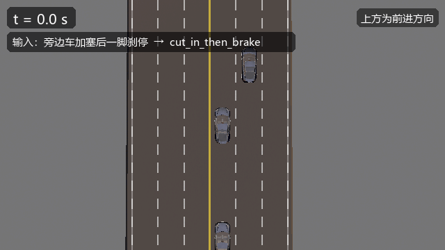

New Features
按时间倒序记录新增功能。每个功能都给出：能力说明、调用方式、示例、效果。
图片全部使用绝对链接。
2026-11 · 自然语言场景生成
此前由大模型直接编写场景脚本，存在两类问题：生成的代码无法编译，或调用不存在的接口。 本版将流程拆分为语义解析与模板装配两步：语义层只负责识别场景类型与参数， 脚本由模板库生成，可执行性由模板库保证。
1. 用法
直接用自然语言描述场景：
旁边车加塞到我前面后立刻急刹
前方车辆突然急刹，我车速 60
有车从左侧强行并线，间距 10 米
需要确认匹配结果时，先调用语义解析：
plan_scenario("旁边车加塞到我前面后立刻急刹")
# → {"template": "cut_in_then_brake", "confidence": 0.95, "params": {}}
再按模板执行：
run_scenario_in_carla(template="cut_in_then_brake", xodr_layout="wide_straight")
2. 支持的表达
| 槽位 | 表达方式 | 示例 |
|---|---|---|
| 速度 | m/s、km/h、中文数字 | 60、60km/h、十五米每秒 |
| 距离 | 米、公里 | 间距 10 米、20m |
| 时间 | 秒、分钟 | 3 秒后、两分钟 |
| 方向 | 左、右、对向 | 从左侧强行并线 |
| 参与者 | 车、行人、摩托车 | 行人横穿 |
| 数量 | 阿拉伯数字、中文数字 | 三辆车 |
当一句话同时匹配多个模板时，find_scenario_templates(query) 返回候选及得分；
最高分未明显领先时输出"需要澄清"，不直接选择。
3. 新增模板
| 模板 | 场景 | 需要地图 |
|---|---|---|
cut_in_then_brake |
邻道车辆切入后制动 | — |
dense_lane_change |
三车道连续变道 | — |
merge_turn |
路口汇入转向 | Town10HD_Opt |
此外，unprotected_turn 调整为真实路口（北进口至东出口），并加入对向直行车辆。

4. 解决的问题
录制动图过程中发现加塞车辆未真正进入自车车道，据此定位并修复两个播放器缺陷：
- 变道跨越两条车道。原实现每帧重新计算相邻车道，车辆进入目标车道后目标再次外移， 实测横向偏差 5.1 m。修复方式为在触发时刻锁定目标车道。
- 变道结束后车辆漂移。变道结束时车身仍存在约 15° 偏角，恢复匀速后该偏角被保留， 车辆逐渐驶出车道。修复方式为结束时将航向对齐车道切线，并在后续保持目标车道。
5. 实测结果
| 项目 | 结果 |
|---|---|
| 模板离线回归 | 全部通过 |
| 中文表达识别（12 条） | 全部命中预期模板 |
| MCP 端到端（解析 → 执行） | 3 个实体、4 个事件全部触发 |
| 真实路口模板 | unprotected_turn / merge_turn 已在 Town10HD_Opt 出图 |
6. 输入容错
口语输入不只差在语义，也差在写法。本版新增统一的文本归一化层
（llm/src/text_norm.py）与打分层（llm/src/intent_router.py）：
| 情况 | 示例 | 处理方式 |
|---|---|---|
| 全角、繁体、语气词 | 前車突然急剎、麻烦帮我搞一个… |
统一为简体，去除标点与客套话 |
| 单位写法不一 | 60码、六十公里每小时 |
统一换算为 km/h |
| 同义动作 | 一脚刹停、紧急制动 |
追加规范说法“急刹”后参与匹配 |
| 拼写略有差异 | 加塞后一脚刹停 |
用最长公共片段做近似匹配 |
| 否定表达 | 不要加塞 |
命中项被否定词过滤，返回澄清而非错误模板 |
匹配结果统一给出三档处置：decision = execute / choose / clarify。
置信度足够时直接执行；存在相近候选时返回候选列表供调用方点选；
无法命中时追问一句，不再落入“其他”。
同时补齐执行前校验（llm/src/scenario_preflight.py）：模板依赖的地图、
参数名与参数取值范围在生成和播放前检查并给出建议。此前
generate_scenario_from_template 会读取 params_json 却不生效，现已修正。
实测：18 条口语样本（含繁体、全角、语气词、同义说法）全部命中预期模板；
不要加塞 返回 clarify。
7. 已知限制
- 否定过滤按词面就近判断，双重否定或跨句否定仍可能误判
- 当前共 15 个模板，无法匹配时返回“未匹配”，不做猜测
- 未显式传参时取参数区间下界（如制动目标速度默认为 0，即刹停）
2026-11 · OpenSCENARIO 播放器增强：位置解析 / 新条件 / 红绿灯 / 跟驰变道
这一版补齐了播放器（llm/src/xosc_player.py）长期缺失的能力，并新增了
signal_phase 模板、一键回归脚本、网页快捷按钮和文字直达入口。
能力
LanePosition按roadId / laneId / s / offset正确解析（修复旧 bug）- 新增 6 类触发条件：加速度、驶出路网、路段末端、累计里程、相对距离、相对角度
- 新增信号灯条件
TrafficSignalCondition与动作TrafficSignalControllerAction - 跟驰改为 IDM（智能驾驶员模型），变道加 横向加速度 3 m/s² 限幅
- 条件求值改按
TriggeringEntities选定主体（修复后车跟驰永不触发、直冲追尾） - 新增
run_traffic_light_demo工具与signal_phase模板（模板总数 11 → 12） - 播放器按 esmini 语义解析
ConditionGroup（组内 AND / 组间 OR）、Condition的delay、 参数声明、Story/Act/Sequence与多Actor、RelativeTargetSpeed StopTrigger与StartTrigger同语义，满足即提前结束；速度曲线新增cubic/sinusoidal与rate维度，跟驰支持maxAcceleration/maxDeceleration- 网页支持文字直达：在对话框输入快捷按钮同名文字即可执行同一场景，本地匹配、不依赖大模型
- 新增一键回归脚本
llm/tools/run_regression.py
1. LanePosition 解析修复
之前的问题：播放器把 s 和 offset 当成世界坐标 x / y，去最近路点里找，
只要场景不是沿 x 轴铺的，车就会布到错误位置（甚至路外）。
现在：先用 CARLA 的 get_waypoint_xodr(roadId, laneId, s) 精确解析，
再按 OSC 约定沿车道左法向叠加 offset；解析失败才退化为"同车道里 s 最近"。
同时 run_scenario_in_carla 增加了 map_name 参数，可以直接把场景放到
Town03 等内置地图上（内置地图才有真实的红绿灯）。
run_scenario_in_carla(template="signal_phase", map_name="Town03")
2. 新增 6 类触发条件
| 条件 | 语义 | 实现 |
|---|---|---|
AccelerationCondition |
自身加速度过阈值 | get_acceleration() 模长 |
OffroadCondition |
连续驶出路网 | 非道路路点判定 + 持续计时 |
EndOfRoadCondition |
到达路段末端 | 沿车道向前探测剩余距离 |
TraveledDistanceCondition |
累计里程 | 逐帧累计位移 |
RelativeDistanceCondition |
与参照实体距离 | 实体间直线距离 |
RelativeAngleCondition |
与参照实体航向夹角 | 航向差（自动抬到 OSC 1.3 导出） |
生成侧同步支持：scenario_ir 增加对应 TriggerKind，osc_builder 负责
编译成标准 XML，回读播放器时 unsupported 仍为 0。
TriggerSpec(kind=TriggerKind.RELATIVE_DISTANCE, entity_ref="lead", value=15.0)
TriggerSpec(kind=TriggerKind.TRAVELED_DISTANCE, value=30.0)
3. 红绿灯相位控制
- 条件：取自车前方最近的一盏红绿灯的实际状态，与目标相位比较
（支持
Red / 红 / 红灯等别名） - 动作：冻结信号灯并切换到指定相位（
green / yellow / red / off）
新增工具 run_traffic_light_demo：在地图里挑一盏灯，沿来车方向后退 35m
布设自车，先冻结为红灯，到点切绿，自车按绿灯条件起步。
run_traffic_light_demo(map_name="Town03", red_hold=4, capture_times="1,3,7,12")
实测输出（Town03）：
t=0.05s force_red traffic_light
t=0.05s hold_red speed=0.00
t=4.05s force_green traffic_light
t=4.10s go_green speed=8.00
红灯期间自车停在停止线前，切绿后通过路口：


模板 signal_phase 则把同一套逻辑放进可复现的 .xosc，可直接在内置地图上跑：
run_scenario_in_carla(template="signal_phase", map_name="Town03")


4. IDM 跟驰与横向加速度约束
跟驰从 P 控制换成 IDM：
其中 、、，
取动作里的跟驰距离（LongitudinalDistanceAction.distance，上限 40m），
油门/刹车由期望加速度映射得到。前车急刹时自车先强减速，最终稳定在给定间距上：
lead_brake 的 distance=15 m，自车停在约 20 m 中心距（15 m 净距），后车同样按 IDM 跟驰：

变道时按 对转向做限幅 （），高速下的切入不再出现"瞬间横甩"：

5. 一键回归脚本与网页快捷按钮
llm/tools/run_regression.py 默认做离线回归（12 个模板 + 新增条件合成场景），
加 --carla 直接连 CARLA 实跑：
python llm/tools/run_regression.py
python llm/tools/run_regression.py --carla --duration 5
实测：离线 12/12 模板结构校验通过、unsupported=0；CARLA 实跑
11 个依赖自建路网的模板全部布景成功、无错误（signal_phase 需内置地图，
由 run_traffic_light_demo 覆盖）。
网页端 http://127.0.0.1:3000/ 的"场景快捷按钮"面板顶部新增了
2026-11 新增功能 分组，四个按钮分别对应红绿灯演示、红绿灯模板、
IDM 跟驰与变道限幅，点击即可执行并回显截图路径。
面板上的按钮也可以改用文字触发（见第 7 节）。
6. 播放器语义对齐（参照 esmini）
此前播放器只取每个事件里的第一条条件，ConditionGroup 的 AND/OR 语义、
delay、参数声明都被忽略。这一版按
esmini 的求值方式补齐：
| OSC 结构 | 现在的行为 |
|---|---|
多个 ConditionGroup |
组之间 OR |
组内多个 Condition |
AND；每个叶子独立做 conditionEdge 判边沿 |
Condition 的 delay 属性 |
条件需连续成立 N 秒才触发 |
ParameterDeclarations |
$name / ${name} 在解析前静态替换 |
Story / Act / Sequence |
全层级遍历（之前只认 Story/Act/ManeuverGroup） |
一个 ManeuverGroup 多个 Actor |
每个 Actor 各展开一份事件 |
RelativeTargetSpeed |
支持 delta（参照速度 + 值）与 factor（参照速度 × 值） |
回归脚本新增 conformance 用例：构造含 2 个 ConditionGroup、delay=2、
$brake_target 参数、Sequence 嵌套、双 Actor 与 RelativeTargetSpeed factor
的 .xosc，逐项断言解析结果：
✅ conformance 条件组 AND/OR、delay、参数、多 Actor、相对速度全部生效
7. 文字直达场景（无需大模型）
在网页聊天框输入快捷按钮上的文字，会先命中本地意图表，直接调用同一个工具并 回显截图路径。匹配与执行都在本机完成，不依赖 DeepSeek API Key 或网络。
| 输入文字 | 执行的操作 |
|---|---|
IDM 跟驰 / 前车急刹跟驰 / 跟驰场景 |
run_scenario_in_carla(template="lead_brake", duration=18) |
红绿灯相位演示 / 信号灯演示 |
run_traffic_light_demo(map_name="Town03") |
红绿灯模板 / 红绿灯场景 |
run_scenario_in_carla(template="signal_phase", map_name="Town03") |
横向加速度 / 变道约束 |
run_scenario_in_carla(template="cut_in") |
播放 lead_brake 模板 |
按模板英文名直接播放 |
隧道 / 环岛 / 匝道汇入 / 无保护转弯 … |
对应的原有 scenario_* 工具 |
文字里还能带参数（地图、时长、截图时刻、红灯时长）：
IDM 跟驰，截图 6,12,15
在 Town04 跑匝道汇入
红绿灯相位演示，红灯 8 秒
输入“IDM 跟驰”后的实际界面与结果：

8. 停止触发、速度曲线与跟驰限幅
停止触发：此前 StopTrigger 只认第一条 SimulationTimeCondition，场景只能跑满
固定时长。现在它与 StartTrigger 走同一套求值逻辑——组间 OR、组内 AND、
TriggeringEntities 主体、conditionEdge 边沿，满足即提前结束：
| 输入 | 行为 |
|---|---|
StopTrigger 含多个 ConditionGroup |
任一组成立即结束 |
组内多个 Condition |
全部成立才结束 |
条件为 StandStill / ReachPosition / RelativeDistance 等 |
运行时逐帧判定 |
无 StopTrigger |
仍按 duration 跑满 |
结果里新增 ended_at 与 stop_reason（duration / stop_trigger），摘要会显示
“实际运行 6.40s（StopTrigger 满足，提前结束）”。
速度曲线：SpeedActionDynamics 支持 step、linear、cubic、sinusoidal，
dynamicsDimension 支持 time 与 rate。设归一化进度 ，
rate 维度的渐变时长按 换算：
当前速度按 逐帧更新，cubic 与
sinusoidal 在起止两端加速度为 0，不会出现速度阶跃。
跟驰限幅：LongitudinalDistanceAction 的 maxAcceleration /
maxDeceleration 直接作为 IDM 的 与 ，输出加速度再按动作上限
夹一次，避免急加速或刹车越界。
实测：前车平滑减速、自车按 cubic 降速，StopTrigger 设为
RelativeDistanceCondition < 15 m，场景在 6.40 s 提前结束（原计划 12 s）：

回归脚本新增 stop_trigger 实跑用例（1 s 后刹停、静止满 1 s 结束）：
计划 8 s，实际 2.20 s 结束；conformance 用例同时断言双条件组 StopTrigger、
cubic 曲线、rate 维度与跟驰加减速上限的解析结果。
✅ stop_trigger 实际 2.20s（计划 8.0s） stop_reason=stop_trigger
✅ conformance 条件组 AND/OR、delay、参数、多 Actor、相对速度、StopTrigger、速度曲线与跟驰上限全部生效
2026-10 · OpenSCENARIO 轨迹跟随
能力
支持 OpenSCENARIO 的 FollowTrajectoryAction：让实体沿一条任意形状的
折线轨迹行驶，轨迹点带时间戳，播放器按时间插值并用纯追踪控制转向。
这条能力把轨迹模块和场景模块接了起来——实采或合成的轨迹现在可以直接 变成场景里的运动。
之前的状态
osc_builder 对 follow_trajectory 直接抛异常：
OSCBuildError: follow_trajectory 需要先由 trajectory 模块转换为 Polyline，暂未接线
用法
方式一，直接给点（世界坐标，米 / 秒）：
from scenario_ir import BehaviorSpec, BehaviorKind
BehaviorSpec(
kind=BehaviorKind.FOLLOW_TRAJECTORY,
entity_ref="ego",
trajectory_points=[
[0.0, 50.0, 1.8],
[1.2, 62.0, 5.0],
[2.3, 85.0, 5.0],
[3.1, 100.0, 1.8],
],
)
方式二，读轨迹文件（JSON 或 CSV，需要 t / x / y 三列）：
BehaviorSpec(
kind=BehaviorKind.FOLLOW_TRAJECTORY,
entity_ref="ego",
trajectory_file="output/synthetic/track_0007.csv",
)
对话方式：
用 evasive_swerve 模板生成一个紧急避让场景
在 CARLA 里播放这个场景，第 2 秒和第 4 秒各截一张图
生成的 OpenSCENARIO
<PrivateAction>
<RoutingAction>
<FollowTrajectoryAction>
<TrajectoryRef>
<Trajectory name="ego_traj" closed="false">
<Shape><Polyline>
<Vertex time="0.0"><Position><WorldPosition x="50.0" y="1.8" z="0.0"/></Position></Vertex>
<Vertex time="1.2"><Position><WorldPosition x="62.0" y="5.0" z="0.0"/></Position></Vertex>
...
</Polyline></Shape>
</Trajectory>
</TrajectoryRef>
<TrajectoryFollowingMode followingMode="follow"/>
</FollowTrajectoryAction>
</RoutingAction>
</PrivateAction>
新模板：紧急避让 evasive_swerve
| 项目 | 值 |
|---|---|
| 实体 | 自车、静止障碍车、对向车 |
| 轨迹点 | 5 个（直行 → 向左避让 → 越过障碍 → 回正 → 继续直行） |
| 参数 | ego_speed / obstacle_gap / lateral |

实测轨迹（t 为动作触发后的相对时间）：
t=1.0 (57.2, 3.5) yaw= 16.0° 开始向左避让
t=2.0 (70.1, 4.6) yaw= 1.3° 在左车道直行
t=3.0 (89.6, 3.3) yaw= -7.5° 越过障碍后回正
t=4.0 (110.9, 1.9) yaw= -1.0° 回到原车道
踩到的两个坑
1. 目标落在车后导致打转
轨迹第一点就是车辆初始位置，如果触发延迟到 1 秒，车已开出 8 米， 插值出的目标点落在车后，纯追踪转向直接饱和，车原地转 75° 后停住。
修法：触发改成立即（TIME > 0.0），并在控制器里加一条——
目标纵向分量 ≤ 0.5 m 时不打方向，保持直行等下一帧。
2. 恒速模式与转向控制打架
实体在转向类动作触发前用的是 enable_constant_velocity，触发后改用
apply_control，但不退出恒速模式时恒速会一直覆盖转向。
现在进入变道 / 偏移 / 横向间距 / 轨迹跟随前统一调用
disable_constant_velocity()。
2026-10 · OpenSCENARIO 相对速度 / 碰撞 / TTC
能力
| 类型 | 条件/动作 | 实现 |
|---|---|---|
| 条件 | RelativeSpeedCondition |
自身速度 − 参照实体速度 |
| 条件 | TimeToCollisionCondition |
TTC = 间距 / 接近速度 |
| 条件 | CollisionCondition |
包围球近似，中心距 ≤ 2.6 m |
| 动作 | RelativeSpeedAction |
目标速度 = 参照速度 + delta，每帧跟随 |
| 动作 | LateralDistanceAction |
保持横向间距，比例控制打方向 |
用法
# 条件：TTC 低于 3 秒时触发
TriggerSpec(kind=TriggerKind.TIME_TO_COLLISION, value=3.0,
rule=Rule.LESS_THAN, entity_ref="lead",
triggering_entity="ego")
# 动作：保持比前车快 4 m/s
BehaviorSpec(kind=BehaviorKind.SPEED, entity_ref="ego",
target_speed=4.0, relative_speed=True,
speed_entity_ref="lead")
修掉的语义错误
osc_builder 原来无论传什么 entity_ref，TTC 都输出
WorldPosition(0, 0, 0)，等于在算"到世界原点的碰撞时间"。
现在正确输出 <EntityRef entityRef="lead"/>。
新模板
| 模板 | 场景 | 触发 / 动作 |
|---|---|---|
close_follow |
高速接近慢车，TTC 低于阈值时减速 | TimeToCollisionCondition + 线性速度动作 |
overtake |
接近 → 变道 → 相对速度超越 → 回原车道 | DistanceCondition + RelativeSpeedAction + 连续变道 |
| 近距跟驰 | 超车 |
|---|---|
 |
 |
close_follow t=8.0 s |
overtake t=8.0 s |
2026-10 · 全部模板实测
11 个模板在 CARLA 0.9.16 中逐个播放，未支持项合计 0：
| 模板 | 实体 | 触发事件 |
|---|---|---|
lead_stationary |
2 | 1/1 |
wrong_way |
2 | 2/2 |
crossing_hazard |
2 | 2/2 |
junction_light |
3 | 3/3 |
lead_brake |
3 | 3/4 |
low_overlap |
3 | 4/4 |
unprotected_turn |
3 | 4/4 |
cut_in |
4 | 4/5 |
close_follow |
2 | 1/1 |
overtake |
3 | 3/3 |
evasive_swerve |
3 | 2/2 |
合计 29/31 事件触发。未触发的 2 个是条件本身未满足，不是播放器缺陷。
相关页面
| 页面 | 内容 |
|---|---|
| 场景生成 | 模板、参数、批量生成 |
| CARLA 执行 | 路网加载、场景播放、支持范围 |
| 效果展示 | 动图与截图 |
| 实测数据与限制 | 指标与已知边界 |